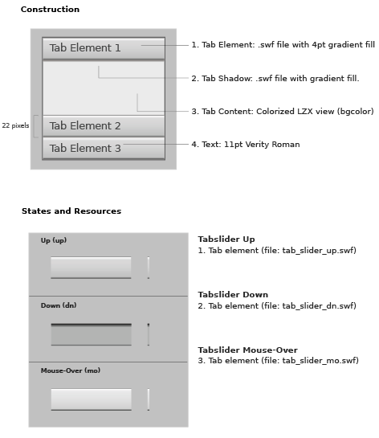

example
LZX Reference
filename: tabslider.lzx
The default tab element (horizontal bar in tab slider) has a height of 22 pixels and a width determined by the width of the tab slider. The type is left aligned on the tab element with an inset. The tab element is comprised of a scalable vector resource which enables disproportional resizing without distortion. Resizing the button will not alter the text. Changing the height of the tab element will extend the gradient (more highlight, more shadow) causing it to look more cylindrical as it grows.
The button form is constructed of four views:
1. The "Tab Element" a single .swf resource with a gradient
2. The "Tab Shadow" resides below the open tab
3. The "Content" area
4. The "Text" view (can also be used with an icon)
The tab element uses three resources for the states (up, mouse-over and down)
The content view is the interior of the tab element. This area is inset so that any objects placed in the content area has a margin.
